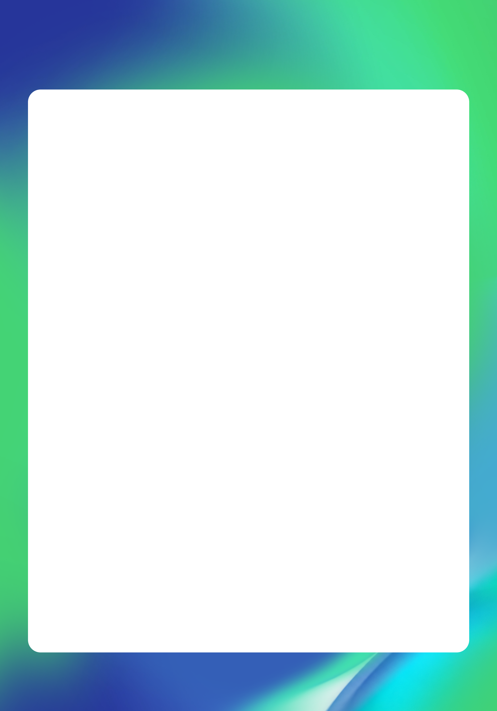
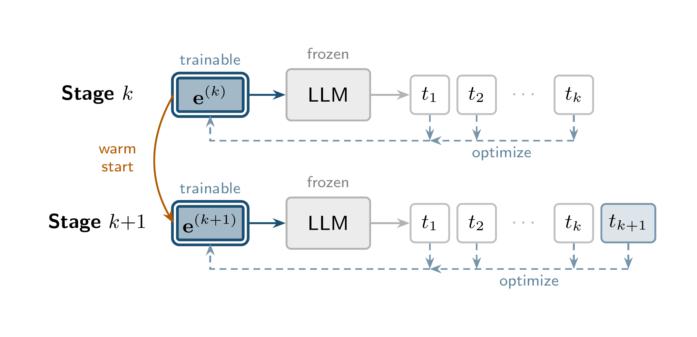
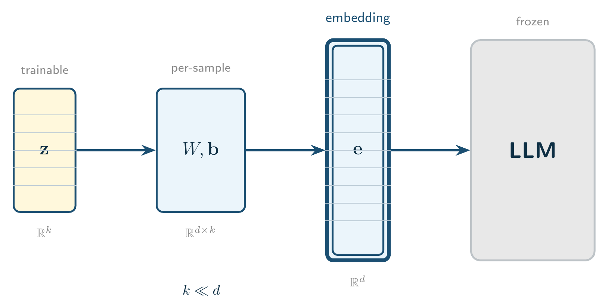
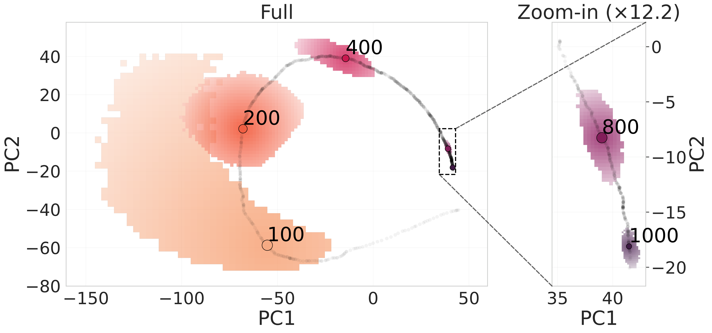
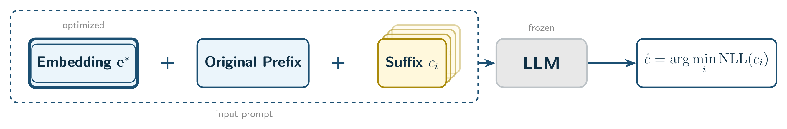
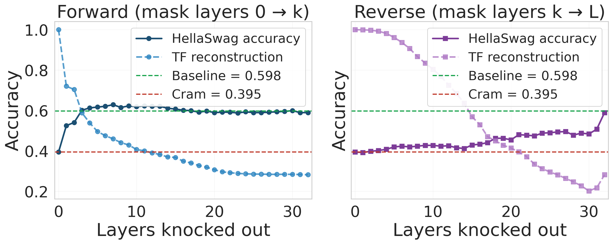
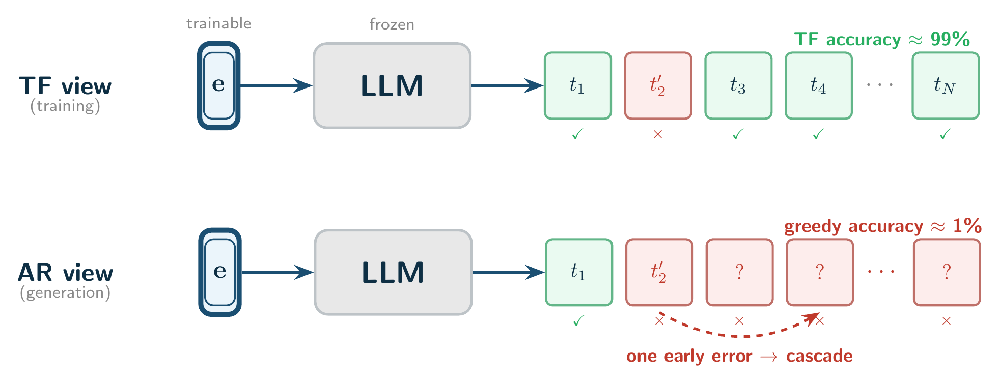

Optimise a per-sample input embedding $\mathbf{e}$ so that a frozen LM reconstructs a text. The target grows one token at a time; the next stage starts only after perfect greedy reconstruction of the current prefix.

Longest text a frozen model reconstructs perfectly from a single embedding, with and without a low-dimensional projection:
| Model | Tokens | +LowDim | Boost |
|---|---|---|---|
| Llama-3.1-8B | 1438 | 1697 | 1.2× |
| Pythia-1.4B | 430 | 500 | 1.2× |
| SmolLM2-1.7B | 335 | 957 | 2.9× |
| Gemma-3-4B | 214 | 697 | 3.3× |
Low-dim projection. Optimise $\mathbf{z}$ with a per-sample affine map $W, \mathbf{b}$:



Prepending a crammed embedding drops benchmark accuracy even with the original prefix in context:
| Model | HS base | HS +emb | ARC base | ARC +emb |
|---|---|---|---|---|
| Pythia-1.4B | 44.0% | 37.6% | 53.1% | 49.1% |
| SmolLM2-1.7B | 53.6% | 37.0% | 67.3% | 56.0% |
| Llama-3.1-8B | 61.9% | 40.8% | 63.5% | 43.3% |
On generative 5-shot MMLU accuracy falls to ≈0% with the optimised embedding, while a random-embedding control stays at the baseline.

Early layers drive both the reconstruction and the capability collapse; the 20–60% late-layer attention mass is a symptom. The pattern holds for Llama-3.1-8B, Pythia-1.4B and SmolLM2-1.7B.
Full cramming fixes the number of tokens and optimises them jointly; progressive cramming fixes accuracy at 100% and grows the text. Full cramming reaches more tokens, but its residual errors sit at early positions, and one early miss cascades through greedy generation:

| Model / type | Tokens | TF acc. | Greedy |
|---|---|---|---|
| Llama-8B / full | 1568 | 99.96% | 40.4% |
| Llama-8B / progr. | 1353 | 100% | 89.8% |
| Pythia / full | 512 | 99.71% | 44.2% |
| Pythia / progr. | 390 | 100% | 96.9% |